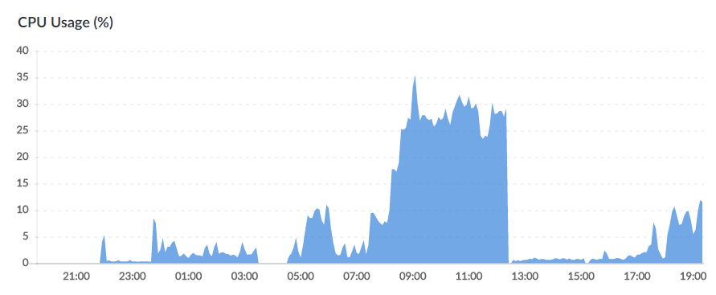
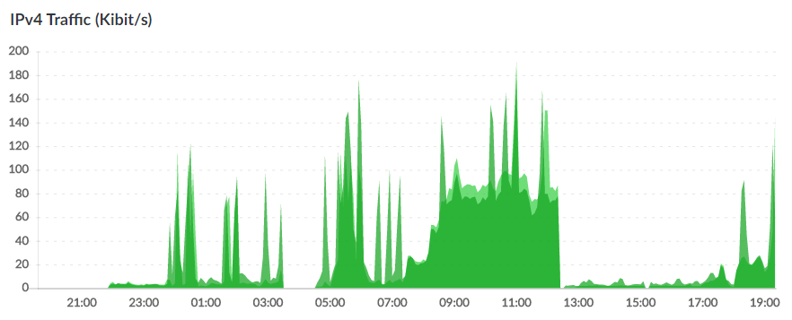

MHN is an open-source centralized server for managing honeypots, making deployment and data collection simple and fast. MHN currently supports a number of honeypot types, check out the list of supported sensors for details, they also allow adding new sensors should you wish.
Setup
My goal was to collect malware and aggregate statistics on various connections and attacks against a single sensor server I deployed. The architecture was two nano linode ubuntu 16.04 instances, one acting as the server and the other as the sensor. This turned out well, the nano instance was enough to handle the workload the majority of the time.
Server setup
Find a server provider, I chose Linode. I went with the nano configuration; 1GB RAM, 1CPU, 25GB storage, 1TB bandwidth for $5 per month. Enough for a small setup, as you add sensors the server will need more resources, so provision accordingly.
Give your server a discriptive name, e.g. “mhn-server”. Ubuntu 16.04 is recommended by MHN as its been tested and verified to work with MHN.
Secure the mhn-server as your normally would, its intended for you to manage sensors, you’re not looking for attackers to attack this instance.
Server steps
Create a non-root user.
adduser deploy
Don’t install MHN as root, it will not work as intended.
Add deploy as sudo user under ‘user privilage specification’:
visudo
deploy ALL=(ALL:ALL) ALL
Switch to the deploy user:
su deploy
Clone the MHN GitHub repo:
git clone https://github.com/pwnlandia/mhn.git
Change to the mhn directory:
cd mhn
Run the installation script:
sudo ./install.sh
Towards the end of the installation you’ll be asked a series of questions. I chose no debug mode, I added a new gmail I created - this will also be used to login to the web interface. I didn’t need splunk or ELK. I left the rest of the options as default.
Login to the web interface.
ipconfig
Copy & paste the IP into a browser on your machine, and login with the email and password you provided earlier.
The server’s done!
Sensor setup
Create a second instance on your service provider, again using a descriptive name - this helps if you scale things up later. I went with ‘mhn-snort-dionaea’.
Snort is an intrusion detection system (IDS), which will provide detail on attacks against the server. It can be configurted extensively, see the snort documentation for more.
Dionaea is a a honeypot emulating various network services to capture malware. See the dionaea documentation for specific confifuration details.
Sensor steps
Select a script
In the web interface provided by the mhn-server, go to the deploy tab and chose the sensor you want to deploy from the ‘select script’ drop down menu.
Copy & paste wget string
Sensor stepup is as easy as copy & pasting the wget command string into the sensor instance.
Check the sensors tab
Click the sensors tab in the web interface to view your new sensor.
Dionaea
Follow the same steps copy & pasting the wget script string for dionaea into the mhn-snort-dionaea instance.
Now you have snort and dionaea setup and running. You can view incoming attacks in the web interface.
Collecting data
As mentioned towards the beginning, my intention was to gather aggregate statistics and hopefully some malware files. Your goals may be different and you can add different sensors and service configurations to achieve your goals.
Immidiately I saw a small number of attacks coming in, surprising how quickly your services are found.
Within 24 hours I had logged over 300,000 scans and attacks from across the world. The web interface provides an enticing global attack map (below). The yellow dot shows the location of the server and the red dots show attacker locations.

The sensor CPU handled the incoming traffic well, utilising around 40% max (observed). As scans/attacks increase between approx. 08:00 and 11:50 I turn on ufw, the linux firewall, to observe the effect out of interest. This is why the graph shows connections and CPU suddenly drop.


Later I turned the firewall off and resumed data collection.
I’m planning on putting together a more detailed post of the data I captured. It won’t be anything particularly special, mostly data on which ports were most attacked, perhaps hints at attack behaviour. Dionaea did capture some files, but I’ve yet to take a look.
Look out for the details and lessons learned in an up-coming post.
Reminder
Whenever you do anything with malware consider the legal implications. Here you are collecting malware - likely a legal activity within your country. However, this quickly changes should you distribute it. Setting the server to be publicly available so you can download the malware, for example. To be clear, this is not legal advice, I am not a legal expert. As ever, seek advice specific to your location and proceed with caution.